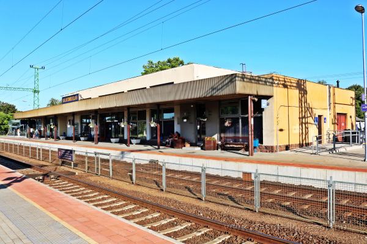
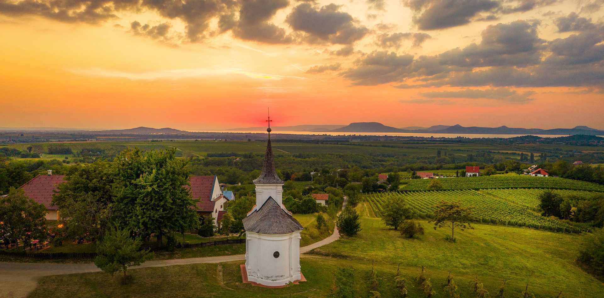
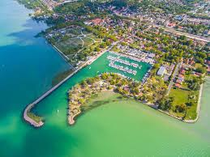

Warum lohnt sich ein Besuch in Balatonboglár?
Balatonboglár ist ein bekannter Weinort und Badeort am Balaton, mit dem markanten Kugelaussichtsturm, schönen Uferbereichen und ausgezeichneten Weißweinen.

Entdecke Balatonboglár mit einem Klick!


Balatonboglár ist ein bekannter Weinort und Badeort am Balaton, mit dem markanten Kugelaussichtsturm, schönen Uferbereichen und ausgezeichneten Weißweinen.


Der kugelförmige Aussichtsturm steht auf einem Hügel über Balatonboglár. Er wurde ursprünglich für die Weltausstellung 1958 in Brüssel gebaut und später hier aufgestellt. Von oben öffnet sich ein weiter Blick auf den Balaton, besonders stimmungsvoll bei Sonnenuntergang.
Route planen
Balatonboglár ist ein wichtiger Weinort der Region. Hier wachsen unter anderem Chardonnay, Olaszrizling, Sauvignon Blanc und Pinot Noir. Die Weinkeller der Umgebung bieten Verkostungen und Besichtigungen, und das Boglárer Erntefest ist jedes Jahr ein beliebtes Programm.
Route planen
Der Hafen von Balatonboglár ist ein guter Ausgangspunkt für Spaziergänge am See, Ausflugsboote und Veranstaltungen am Wasser. Segelboote, Strände und die entspannte Uferstimmung machen den Ort besonders im Sommer attraktiv.
Route planen